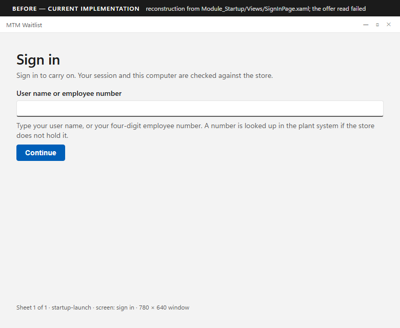

Say why the previous-people list is missing
startup-launch · sign-in · viewport 780×640
BEFORE — CURRENT IMPLEMENTATION

AFTER — PROPOSED QOL IMPROVEMENT
What changed
The offer column stays where it is and says why it is empty, instead of the column disappearing.
Sign-in itself is unchanged: the form still works with the name typed by hand.
The BEFORE image is a reconstruction. Rendered 2 state(s) at 1 window size(s).